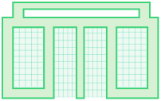
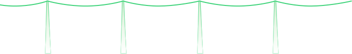
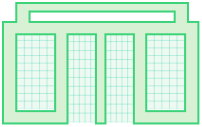
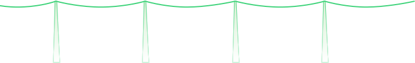

Железные дороги
и экология
Экологичный транспорт
Поезда считаются наиболее бережным к природе видом транспорта. На железнодорожный транспорт приходится 7% мировых грузоперевозок, но только 3% энергии, используемой мировой транспортной отраслью, и менее 1% выбросов загрязняющих веществ.
Исследования РЖД в России показывают аналогичную картину. Железные дороги обеспечивают 23,4% пассажирских и 87,2% грузовых перевозок в стране. При этом на долю РЖД приходится менее 1% общего объема парниковых выбросов от всех видов транспорта. И с каждым годом российские железные дороги становятся еще экологичнее.
Выбросы углекислого газа при перевозке одного и того же груза поездами и другими видами транспорта
Уве Лойшнер
Эксперт по железнодорожному коридору Китай — Европа, специалист по работе немецкого логистического бизнеса на территории России
Экологичность как экономический фактор: мнение эксперта
Железнодорожный транспорт — самый экологически чистый: в пересчете на один перевезенный контейнер выбросы CO₂ на 30–40% меньше, чем у морского транспорта. Усиливая железнодорожные перевозки Восток — Запад, мы создаем более экологичную логистику будущего.
Еще 20 лет назад железнодорожные транспортные компании называли экологичность среди своих преимуществ, но долгое время она оставалась второстепенным фактором, который мало волновал клиентов. За последние два года положение изменилось: больше и больше компаний понимают, что в перевозке по железным дорогам имеют значение не только цены и сроки. Евросоюз декларирует стремление к дальнейшему снижению выбросов CO₂, и бизнес в разных сферах понимает, что если не среагировать на этот сигнал, не добиваться прогресса по снижению выбросов уже сейчас (в частности, повышая экологичность логистики), то в будущем это создаст сложности для развития компании.
У экологичности есть и прямое экономическое значение. В Европе обсуждается идея налога на эмиссию CO₂. И если при перевозке морем эмиссия выше, чем по железной дороге, то на нее будет начислен больший налог: лишние 15 или 25, или 50 евро за тонну СО₂ (размеры обсуждаются). Думаю, этот закон в конце концов примут, а налог будут включать в цену перевезенных товаров. Тогда товары, доставленные поездами, станут более привлекательны для конечного потребителя.
Системный подход к экологии
Снижение загрязнений от деятельности РЖД
в 2007–2019 годах
раза
ниже Загрязнения от
стационарных
источников
раза
ниже Загрязнения
от поездов
раза
ниже Расход
воды
раза
ниже Сброс
загрязненных
вод
Начиная с 2009 года РЖД формирует экологическую стратегию и ставит перед собой целевые показатели по экологии. Системная работа дает отличные результаты: количество перевозок растет, а загрязнения, вызванные ими, сокращаются из года в год.
Более того, РЖД добровольно ликвидирует экологический ущерб от железнодорожных перевозок, накопленный с 1930-х годов. Уже ликвидировано 270 загрязнений площадью 300 000 кв. м, осталось еще 304 — их компания планирует устранить в ближайшее десятилетие.
Птичников
Андрей Владимирович
Заместитель директора Центра ответственного использования природных ресурсов Института географии РАН (Responsible steel). Ранее — директор Российского национального офиса Лесного попечительского совета (FSC России)
Кто самый экологичный: мнение эксперта
«Традиция бережного отношения к природе идет из европейских стран. Сейчас компании там более продвинуты в плане отдельных направлений — в частности, они намерены стать климатически нейтральными к 2050 году. При этом по ряду других направлений РЖД показывает больший темп экологизации по сравнению с ведущими мировыми компаниями. Например, по прогрессу в электрификации РЖД находится на самом высоком мировом уровне. Этот прогресс в сфере экологизации достигается не только за счет „низкого старта“, но и благодаря вложению значительных финансовых ресурсов и человеческого капитала, желанию соответствовать требованиям „зелёного“ финансирования».
Зеленые планы: перспектива на 2030-й
Экологическая стратегия РЖД рассчитана до 2030 года. Чтобы выполнить планы, компании потребуется значительно обновить техническую базу. Прежде всего обновится парк локомотивов.
• РЖД уже используют 4 000 локомотивов с умными системами управления. Они формируют оптимальный алгоритм движения с минимальными затратами энергии, что также обеспечивает сокращение вредных выбросов.
• В ближайшие годы место дизельных локомотивов постепенно займут газомоторные, которые выбрасывают в атмосферу в 5 раз меньше вредных веществ.
•Электровозы вообще не создают вредных выбросов в атмосферу. Чтобы использовать их как можно шире, РЖД электрифицируют железные дороги. А на самих электровозах будут больше применять энергоэффективные технологии, например рекуперацию электроэнергии.
Стационарные объекты железных дорог — станции, депо, очистные сооружения — тоже будут расходовать меньше ресурсов. Для этого РЖД оптимизируют режим их работы и эффективность отопления и освещения. Даже такое простое изменение, как переход на светодиодные светильники, в масштабах корпорации существенно снизит затраты энергии.
Чтобы уменьшить сброс загрязненных вод, РЖД обновит существующие очистные сооружения и построит новые, с современными технологиями водоочистки. А чтобы снизить вред от шума и вибрации, компания будет применять бесстыковые пути и упругие рельсовые скрепления, шлифовать и смазывать рельсы, высаживать вдоль путей деревья и устанавливать шумозащитные экраны.
При этом РЖД будет постоянно контролировать выбросы парниковых газов и других загрязняющих веществ, чтобы корректировать свою работу по сохранению экологического равновесия.
Снижение загрязнений от деятельности РЖД
к 2030 году
В экологической стратегии РЖД до 2030 года предусмотрено два возможных сценария:
консервативный и более
оптимистичный
инновационный.
парниковых газов
загрязненных вод
стационарных
источников
локомотивов
 

Деньги на экологичные проекты:
«зеленые» облигации
В мире сегодня активно развивается «зеленое» финансирование: инвесторы целенаправленно выбирают для инвестиций экологически чистые и значимые проекты. От компании, получившей инвестиции, требуется соблюдать природоохранное законодательство, предоставлять прозрачную экологическую отчетность и сотрудничать с надзорными органами и общественниками.
РЖД — один из пионеров «зеленого» финансирования в России. В 2020 году компания впервые в истории страны выпустила бессрочные «зеленые» облигации на 100 млрд рублей. До этого РЖД делали и другие «зеленые» размещения, 74% которых выкупили зарубежные инвесторы.
Привлеченные таким образом средства понадобятся компании в том числе и на одном из главных современных проектов — реконструкции БАМа и Транссиба.
Григорьев
Александр Владимирович
Руководитель департамента исследований топливно-энергетического комплекса Института проблем естественных монополий
Чем экологичность выгодна бизнесу: мнение эксперта
"Экологичные компании сегодня получают дополнительные преимущества с конкретным экономическим выражением. Природоохранное законодательство у нас, как и во всем мире, ужесточается. Вкладывая в экологические проекты, железнодорожная компания снижает свои экологические риски, связанные, например, с возможными штрафами. Также проявляется комплексный эффект: повышение эффективности использования энергии не только позволяет сократить затраты, но и уменьшает негативное воздействие на окружающую среду. Наконец, экологические проекты дают имиджевый эффект, что в последнее время начинает влиять на привлечение финансирования.
В мировой практике сложились и «зеленые» финансовые инструменты с более выгодными для эмитента ставками: например, по «зеленым» облигациям ниже ставки купонного дохода, а по «зеленым» кредитам ниже ставки кредитования. Учитывая высокую капиталоемкость проектов с выраженным экологическим эффектом — модернизации оборудования, техперевооружения, повышения энергоэффективности и т. д., — даже незначительная разница в ставках кредитования дает значительную экономию".
Реконструкция БАМа и Транссиба:
экология
Сейчас РЖД реализует проект реконструкции главных железнодорожные артерий на востоке России, которые проходят через Байкальскую природную территорию.
Экологи и общественные организации опасаются, что разрешение на вырубку леса и отмена обязательной экологической экспертизы при строительстве транспортных объектов могут нанести ущерб природе. Однако компания предусмотрела все возможные меры безопасности, чтобы не навредить уникальной экосистеме этих мест.
РЖД будет постоянно отслеживать влияние строительства на окружающую среду. Чтобы свести к минимуму атмосферные выбросы и сбросы загрязненных вод, компания модернизирует имеющиеся и построит новые очистные сооружения. Рубить лес вдоль путей действительно придется, но узкой полосой (10–15 м) и только там, где иначе нельзя. При этом вместо срубленных компания высадит новые деревья, а также вместе с экологическими организациями будет восстанавливать популяции редких видов растений и животных на Байкале.
Реконструкция БАМа и Транссиба будет выполняться в полном соответствии с природоохранным законодательством, и все работы будут максимально прозрачными. На каждый строительный объект РЖД опубликуют общедоступный экологический паспорт. Туда войдет информация об объекте и связанных с ним экологических компенсациях, данные экомониторинга в районе объекта, включая контроль почвы, воздуха и вод. Представители общественных и научных организаций смогут лично осматривать места строительства и контролировать, соблюдаются ли меры экологической безопасности. А обычные граждане смогут следить за реконструкцией через систему многоканального информирования: в интернете, СМИ и соцсетях, по телефону горячей линии в Иркутске, в виде выставок на региональных вокзалах.
Байкальская природная территория
Компенсация ущерба
берегов Байкала: полоса
10–15 м (всего 40 га)
восстановили, высадив
в районе Байкала 80 000
сосен на 20 га.
Для возведения объектов
вдоль действующих путей,
если нет альтернатив
Птичников
Андрей Владимирович
Руководитель департамента исследований топливно-энергетического комплекса Института проблем естественных монополий
Насколько велика угроза Байкалу: мнение эксперта
"Сегодня мало кто отрицает необходимость строительства вторых путей Транссиба и БАМа, альтернативы этому проекту в принципе нет. На мой взгляд, проект РЖД достаточно обоснован с экологической точки зрения, а предложенные механизмы в целом позволяют компенсировать экологический ущерб из-за вырубки леса.
Общественность и экологические организации во многом обеспокоены изменениями в законодательстве об экологической экспертизе, которые предшествовали реализации проекта. В частности, была отменена государственная экспертиза прокладки транспортной инфраструктуры, если ее строят в рамках поручения правительства или президента. Экологи опасаются, что это изменение будет применяться не только для работ с железнодорожной инфраструктурой, но и для не очень добросовестного размещения различных коммерческих объектов на природоохранных территориях.
Я не думаю, что эти риски применимы к проекту РЖД по реконструкции БАМа и Транссиба, скорее, они касаются возможных проектов других организаций на других охраняемых природных территориях. Кроме того, взаимодействие РЖД с экологическими и научными организациями при реализации данного проекта в части оценки воздействия на окружающую среду (ОВОС) позволит максимально снизить экологические риски".
Вклад в экологию
Что проект даст России
БАМ и Транссиб — это железнодорожный коридор между Европой и Азией. После расширения и повышения пропускной способности по нему пойдет часть тех грузов, которые сейчас доставляются морем и автотранспортом.
Железнодорожные перевозки уже сейчас экологичнее прочих. К тому же РЖД, следуя мировым трендам, увеличивает долю экологически чистого электротранспорта и снижает объем вредных выбросов всех видов. Реконструкция железнодорожных магистралей не только станет вкладом в экономику России, но и в долгосрочной перспективе уменьшит вредное воздействие на экологию всего региона.